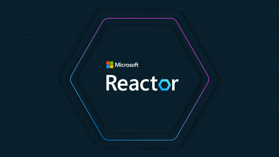

今日舉行
AI Genius：以自我修復代理規模化營運 AI 系統
AI Genius | Operate & Scale: Self-Healing ZeroOps and Enterprise-Wide Modernization
一小時官方直播，示範如何用 Copilot App Modernization 與 Azure SRE Agent，把舊系統升級同 AI 系統日常營運規模化：自動評估與升級、可審查的 stacked pull requests，以及把運行訊號接上已測試的修復建議。
屬 AI Genius Season 6 系列。適合負責舊系統現代化、平台工程、SRE／DevOps 同要在生產環境營運 AI 系統的團隊。
官方連結 →